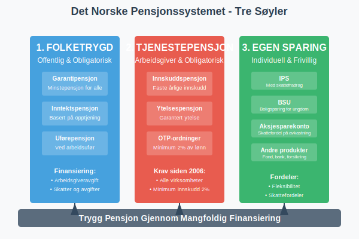
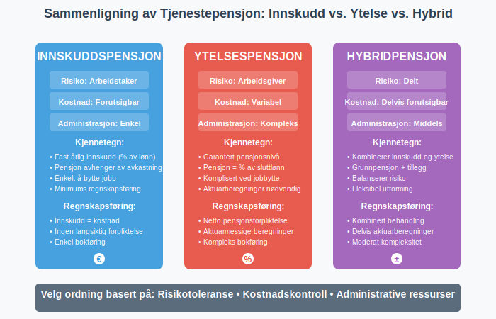
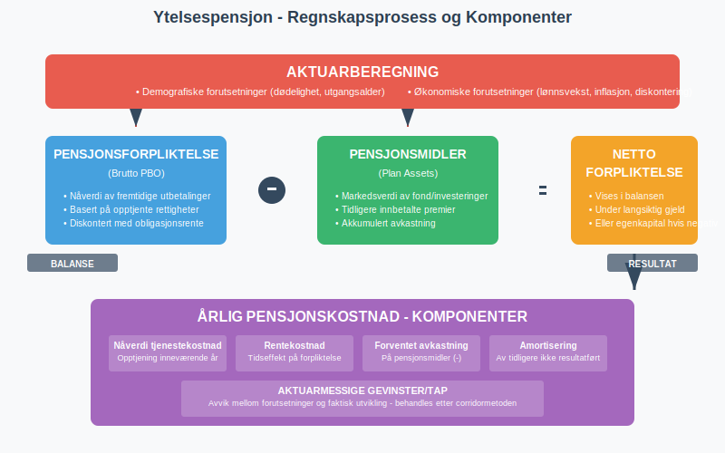
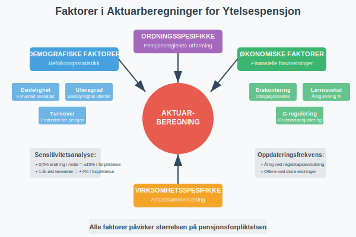
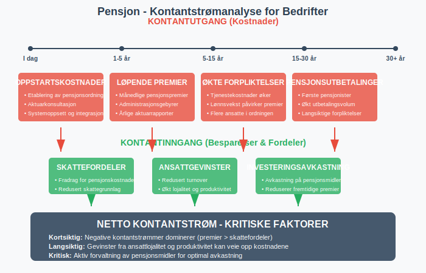
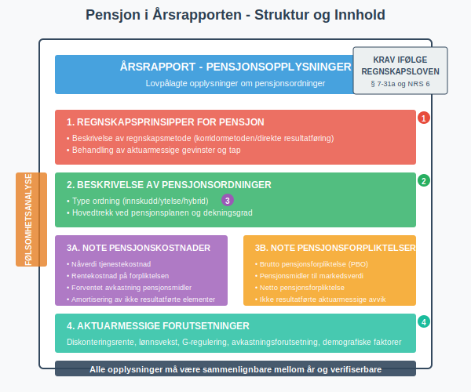
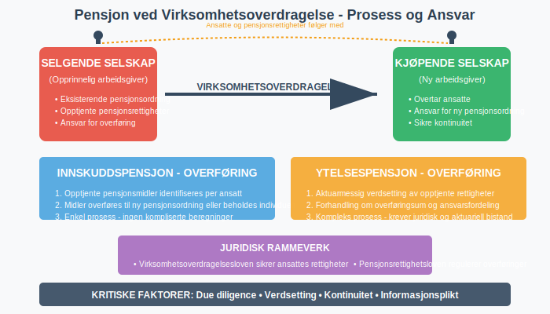
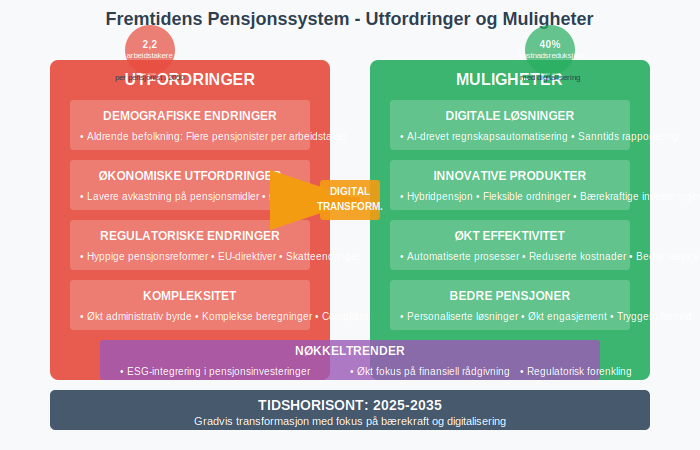
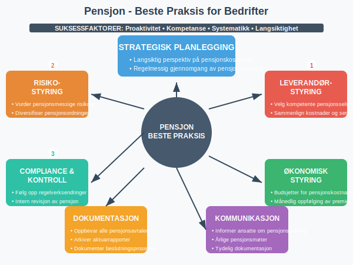

Pensjon er et system designet for å sikre økonomisk trygghet i alderdommen. I Norge består pensjonssystemet av flere lag, og for bedrifter representerer pensjon både en sentral del av lønnskostnadene og en viktig langsiktig forpliktelse. Pensjonsordninger påvirker både selskapets kontantstrøm og balanse.

Skattetrekk for pensjons- og trygdeutbetalinger beregnes iht. Tabell 7100, som gir oversikt over trekkprosent for ulike utbetalingstyper og inntektsnivåer.
Det Norske Pensjonssystemet
Det norske pensjonssystemet består av tre hovedsøyler som til sammen skal sikre pensjonistene en trygg økonomisk tilværelse:
1. Folketrygden (Første Søyle)
Folketrygden er det offentlige, obligatoriske pensjonssystemet som administreres av NAV. Alle som har bodd eller arbeidet i Norge, opptjener rettigheter i folketrygden. Systemet finansieres gjennom arbeidsgiveravgift og skatter.
Folketrygden består av:
- Garantipensjon og minstepensjon: Sikrer alle en minstepensjon
- Inntektspensjon: Basert på opptjente pensjonspoeng gjennom arbeidslivet
- Uførepensjon: For personer som blir varig arbeidsufør
2. Tjenestepensjon (Andre Søyle)
Tjenestepensjon er arbeidsgiver-finansierte pensjonsordninger som er lovpålagt for alle virksomheter med ansatte. Fra 2006 har alle arbeidsgivere plikt til å etablere en obligatorisk tjenestepensjon (OTP) for sine ansatte.
Tjenestepensjon kan organiseres som:
- Innskuddspensjon: Arbeidsgiveren betaler faste innskudd til pensjonsselskap
- Ytelsespensjon: Arbeidsgiveren garanterer en bestemt pensjonsytelse
- Hybridpensjon: Kombinasjon av innskudd og ytelse

3. Individuell Pensjonssparing (Tredje Søyle)
Den tredje søylen består av frivillig pensjonssparing som individer etablerer selv. Dette inkluderer:
- IPS (Individuell Pensjonssparing): Med skattefradrag
- BSU (Boligsparing for ungdom): Kan brukes til pensjon
- Aksjesparekonto: For langsiktig sparing
- Andre spareprodukter: Fond, bank og forsikring
Regnskapsføring av Pensjon
For bedrifter krever pensjonshåndtering grundig forståelse av regnskapsprinsipper og regnskapsstandarder. Pensjonsrapportering er en kritisk del av dette arbeidet.
Innskuddspensjon - Regnskapsføring
Innskuddspensjon er regnskapsmessig enklest å håndtere:
- Månedlig kostnad: Innskuddet føres som lønnskostnad når det påløper
- Betalingsplikt: Skyldige innskudd føres som kortsiktig gjeld
- Ingen langsiktige forpliktelser: Arbeidsgiveren har bare plikt til å betale løpende innskudd
| Konto | Debet | Kredit |
|---|---|---|
| Lønnskostnad | X | |
| Skyldig pensjonspremie | X |
Ytelsespensjon - Regnskapsføring
Ytelsespensjon krever mer kompleks regnskapsbehandling siden arbeidsgiveren garanterer fremtidige ytelser:

Sentrale elementer:
- Pensjonsforpliktelse: Nåverdien av fremtidige pensjonsutbetalinger
- Pensjonsmidler: Verdien av midler satt av til å dekke forpliktelsen
- Netto pensjonsforpliktelse: Differansen mellom forpliktelse og midler
- Pensjonskostnad: Årlig kostnad som påvirker resultatregnskapet
Beregningsgrunnlag for ytelsespensjon:
- Antatt lønnsvekst
- Avkastning på pensjonsmidler
- Dødelighet og utgangsalder
- Inflasjon og G-regulering
Aktuarberegninger
Aktuarberegninger er faglige vurderinger utført av autoriserte aktuarer som beregner:
- Fremtidige pensjonsforpliktelser
- Pensjonskostnader for regnskapsperioden
- Demografiske og økonomiske forutsetninger

Disse beregningene må oppdateres årlig og danner grunnlag for regnskapsføringen.
Pensjonskostnader og Kontantstrøm
Pensjon påvirker bedriftens økonomi på flere måter:
Løpende Pensjonskostnader
- Innskuddspensjon: Faste årlige kostnader basert på lønn
- Ytelsespensjon: Varierende kostnader basert på aktuarberegninger
- Administrasjonskostnader: Kostnader til pensjonsforvaltning
Kontantstrømeffekter
- Direkte utbetalinger: Pensjonspremier og innskudd
- Skatteeffekter: Fradrag for pensjonskostnader
- Likviditetsplanlegging: Planlegging av fremtidige pensjonsutbetalinger

Pensjon i Årsrapporten
Pensjonsopplysninger må presenteres i årsrapporten gjennom:
Noter til Regnskapet
Note om pensjoner må inneholde:
- Beskrivelse av pensjonsordningene
- Aktuarmessige forutsetninger for ytelsespensjon
- Specifikasjon av pensjonsforpliktelser og pensjonsmidler
- Endringer i pensjonsforpliktelsen i regnskapsåret
- Følsomhetsanalyser for sentrale forutsetninger
Regnskapsprinsipper
Valgte regnskapsprinsipper for pensjon må beskrives, inkludert:
- Metode for regnskapsføring av ytelsespensjon
- Behandling av aktuarmessige gevinster og tap
- Amortisering av ikke resultatførte elementer

Skatteregler for Pensjon
Pensjon har omfattende skattemessige implikasjoner:
Bedriftsperspektiv
- Fradragsrett: Pensjonskostnader er fradragsberettiget
- Tidspunkt: Fradrag følger regnskapsmessig periodisering
- Begrensninger: Maksimale fradrag for enkelte pensjonsordninger
Arbeidstakerperspektiv
- Innskuddspensjon: Ikke skattepliktig for mottakeren ved innbetaling
- Pensjonsutbetalinger: Skattepliktige som pensjonsinntekt
- Særordninger: Spesielle regler for enkelte yrkesgrupper
Pensjon og Virksomhetsoverdragelse
Ved virksomhetsoverdragelse må pensjonsrettigheter håndteres spesielt:
Innskuddspensjon
- Midler overføres normalt til ny ordning
- Opptjente rettigheter følger arbeidstakeren
- Enkel overgangsordning
Ytelsespensjon
- Kompleks overføringsprosess
- Vurdering av pensjonsforpliktelser
- Avtaler om ansvarsfordeling

Fremtidens Pensjonssystem
Det norske pensjonssystemet er i stadig utvikling:
Demografiske Utfordringer
- Aldrende befolkning: Flere pensjonister per arbeidstaker
- Lengre levealder: Økte pensjonskostnader
- Lavere fødselstall: Færre til å finansiere pensjonene
Politiske Endringer
- Pensjonsreformer: Kontinuerlige justeringer av folketrygden
- Nye regler: Endringer i tjenestepensjonsloven
- EU-regulering: Påvirkning fra europeiske direktiver
Teknologiske Muligheter
- Digital forvaltning: Mer effektiv administrasjon
- Automatisering: Reduserte administrative kostnader
- Nye produkter: Innovative spareprodukter

Pensjon og Internkontroll
Effektiv pensjonshåndtering krever solid internkontroll:
Kontrollrutiner
- Månedlig avstemming: Kontroll av pensjonspremier og innskudd
- Årlig gjennomgang: Vurdering av aktuarmessige forutsetninger
- Compliance: Sikre etterlevelse av lovkrav
Risikoområder
- Aktuarmessige feil: Feilberegninger av pensjonsforpliktelser
- Regelverksendringer: Manglende oppfølging av nye regler
- Systemrisiko: Tekniske feil i pensjonssystemene
Dokumentasjon
- Avtaler: Oppbevaring av pensjonsavtaler og regelverksdokumenter
- Beregninger: Dokumentasjon av aktuarberegninger
- Beslutninger: Protokoller fra pensjonsrelaterte beslutninger
Praktiske Råd for Bedrifter
For bedrifter som skal etablere eller forvalte pensjonsordninger:
Valg av Pensjonsordning
- Vurder kostnadene: Sammenlign innskudd vs. ytelse
- Analysér risiko: Forstå langsiktige forpliktelser
- Involvér ansatte: Kommuniser pensjonsmuligheter
Leverandørvalg
- Pensjonsselskap: Vurder service og kostnader
- Aktuarkonsulent: Velg kompetent og erfaren aktuar
- Regnskapsfører: Sikre korrekt regnskapsbehandling
Løpende Forvaltning
- Årlig gjennomgang: Evaluer pensjonsordningen
- Markedsovervåking: Følg utviklingen i pensjonsbransjen
- Compliance: Hold deg oppdatert på regelverksendringer

Pensjon er et komplekst område som krever grundig forståelse av både juridiske, regnskapsmessige og skattemessige forhold. For bedrifter er det essensielt å etablere gode rutiner for håndtering av pensjonsforpliktelser og sikre korrekt regnskapsføring av pensjonskostnader.